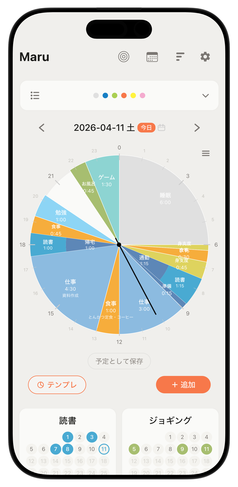

まるごとの自分を、あるがままに。
All of you.
As you are.
２４時間・習慣・ＴＯＤＯ、今日の自分を、まるごと１画面で。
Goals, time, habits — three tools in one screen.
２４時間・習慣・ＴＯＤＯ、今日の自分を、まるごと１画面で。
Goals, time, habits — three tools in one screen.

Features
Maruはまるごと1画面。行き来しなくて大丈夫。
Maru, Everything in one screen. Nothing to switch.
カテゴリや役割ごとに目標とTODOを整理。確認しながら24時間を考えられる。
Let’s organize your goals and to-do lists. You can review them when planning your day.
時計型のグラフで一日の使い方を視覚化。予定と実際を見比べる機能も。
Visualize your daily routine with a clock-style graph. It also lets you compare your schedule with your actual activities.
毎日の継続をワンタップで月間カレンダーに記録。累計日数も確認できる。
Record your daily progress with a single tap on the monthly calendar. You can also check your total number of days.
すべてが等しく、あなたの記録。
Every single moment is equally precious to you.
時間の使い方をグラフで可視化。自分の等身大をデータで知る。
Visualize how you spend your time. Understand yourself through your own data.
過去のTODOや習慣の記録を確認。もちろん、予定を立てるのにも使えます。
Check your schedule on the calendar. View your past TODOs and habits.
md.形式で書き出し可能。自由にノートアプリやAIで管理できます。
Exportable in Markdown format. You can freely manage your notes using note-taking apps or AI.